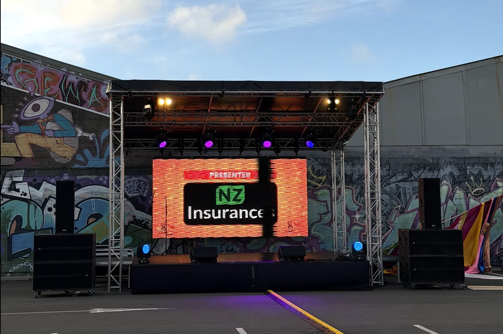
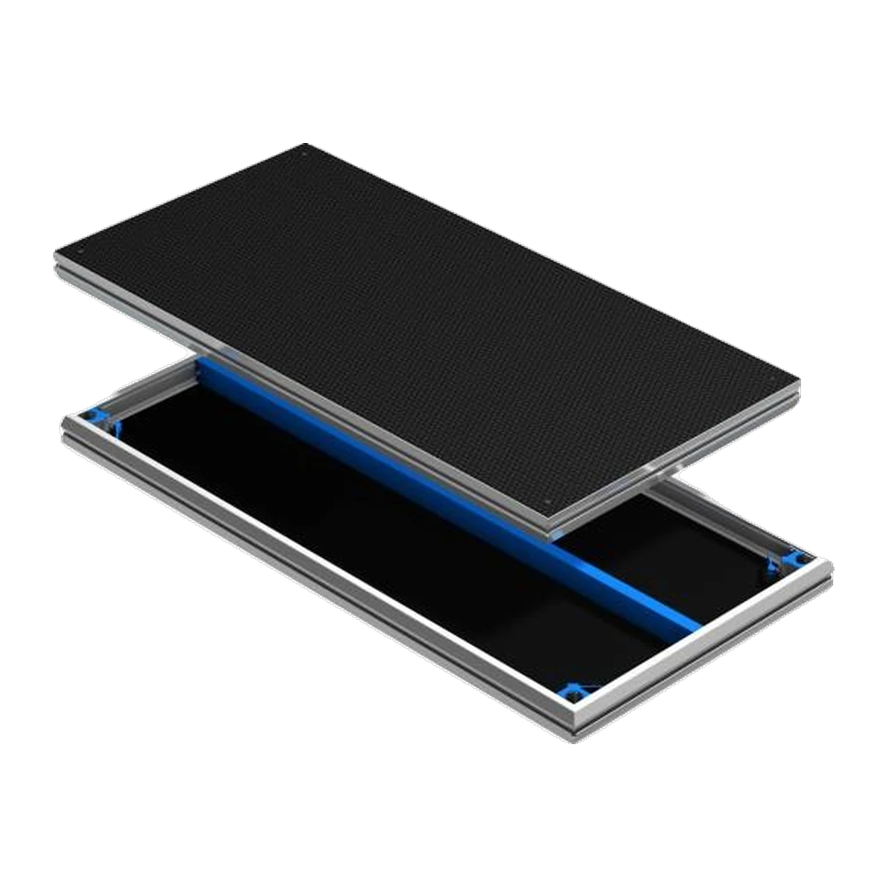
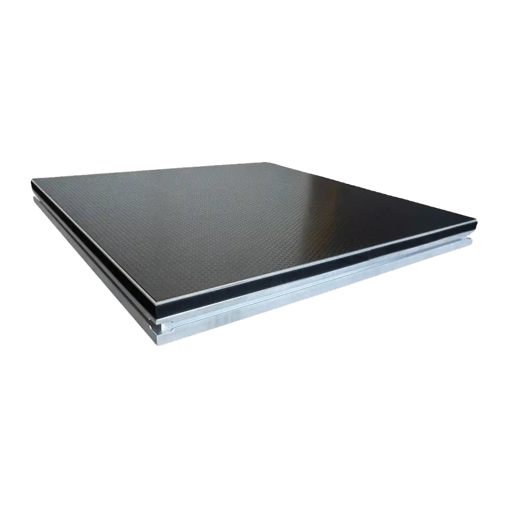
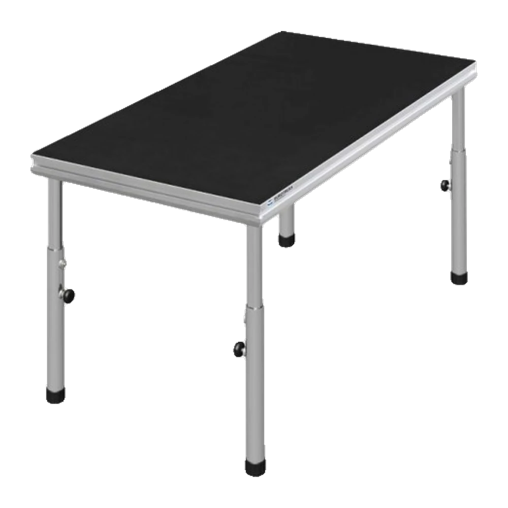

We carry a full stock of Eurotruss stage decks in multiple sizes. Build a stage for a band, a DJ platform, a ceremony riser, or a corporate presentation. We can build to any size and shape by combining deck sizes.
All legs, clamps, and levellers come included with every deck hire at no extra cost. We deliver, build the stage, and pack it down after.


$50 +GST per deck
The standard size. Combine multiples to build stages of any width and depth.

$40 +GST per deck
Half-size deck for tighter spaces, extensions, and custom stage shapes.

$40 +GST
Solid Eurotruss DJ table. Stable, the right height, and purpose-built for CDJs and a mixer.

$40 +GST
Compact Eurotruss DJ table for tighter booth setups or smaller venues.
All legs come included with every deck hire at no extra cost. Leg sizes available: 300mm, 600mm, 900mm, and adjustable legs. Stage deck clamps also included. Email us with your event details to get a quote and book.
Eurotruss decks in 2m x 1m, 1m x 1m, 2m x 0.5m, and 0.5m x 1m sizes. Combine any number to build the stage size you need.
All legs included at no extra cost. 300mm, 600mm, 900mm fixed legs plus adjustable legs for uneven surfaces. Clamps included.
Stage skirting, railings, stairs, and ramps available. We build to comply with venue and safety requirements. Delivery, setup, and packdown included.
Tell us the stage size you need and we\'ll put a price together.
Get in touch or call 021 178 0355.
Any size. We combine 2m x 1m and 1m x 1m decks to build whatever you need. Common setups are 4m x 3m for bands, 2m x 1m for ceremony risers, and 6m x 4m for larger shows.
Yes. The Eurotruss decks work on grass, concrete, and uneven ground. Adjustable legs handle level changes. For outdoor stages we can also add truss for a roof structure.
Skirting, railings, stairs, and ramps are all available. Let us know what you need and we\'ll include it in the quote.
All Ears Events Limited
20 Southwark Street, Christchurch
021 178 0355 · hello@allears.nz
Mon-Fri 9am-4pm